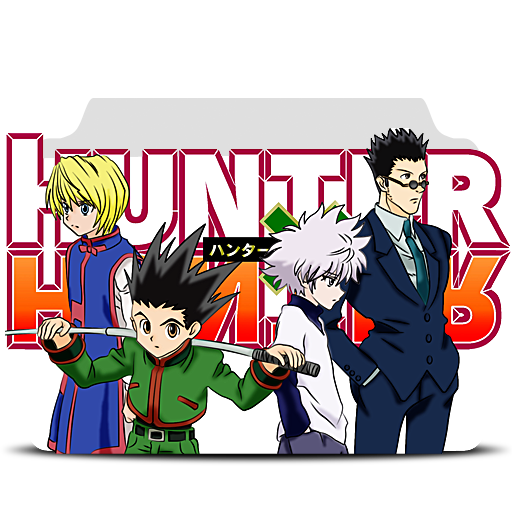
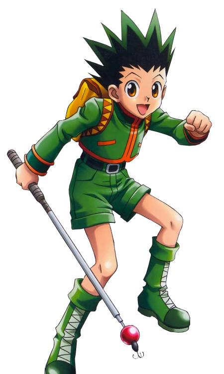
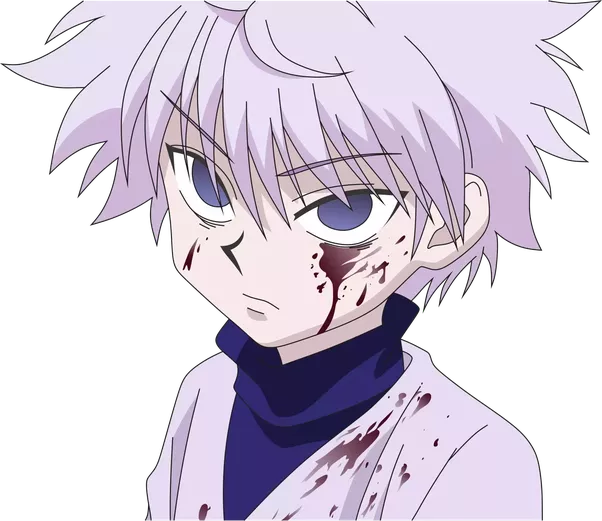
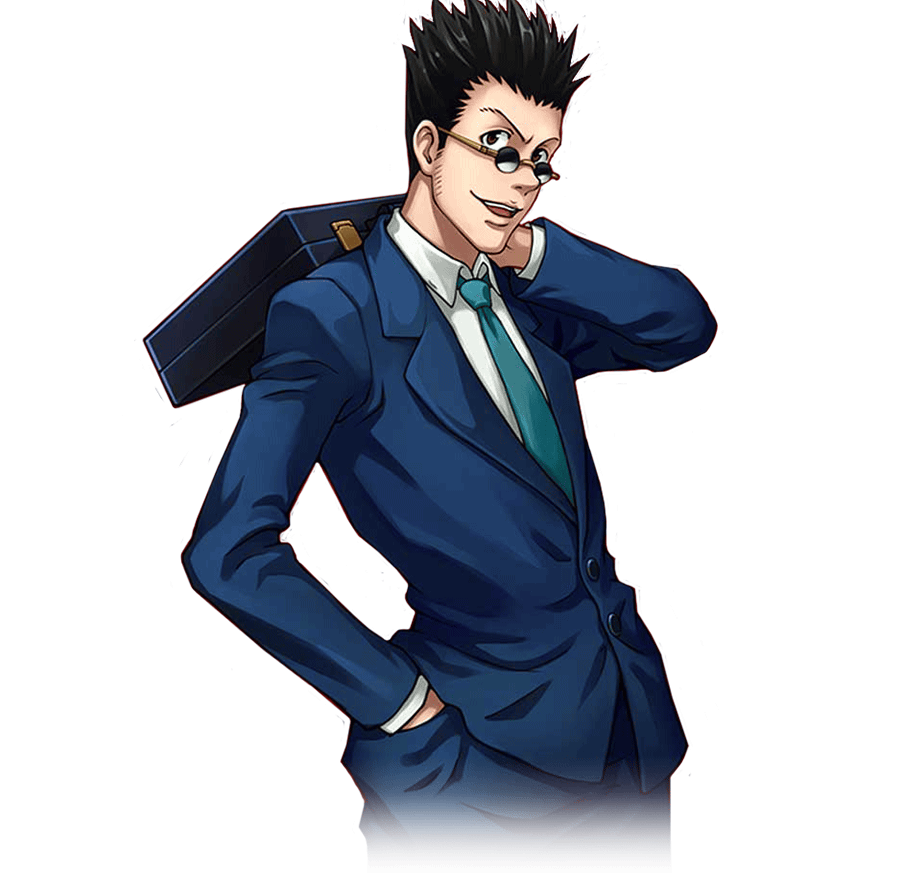

.png)
Hunter x Hunter
Hunter × Hunter (ハンター×ハンター Hantā × Hantā?, pronúncia japonesa da expressão inglesa Hunter × Hunter, estilizado como HUNTER×HUNTER; pronunciado "Hunter Hunter", significa Caçador Caçador em português) é uma série de mangá escrita e ilustrada por Yoshihiro Togashi. Os capítulos são serializados na revista Weekly Shōnen Jump desde 3 de março de 1998, onde são compilados e publicados em formato tankobon pela editora Shueisha, embora o mangá tenha frequentemente entrado em hiato desde 2006. A história tem como protagonista Gon Freecss, um menino de 12 anos que quer encontrar o seu pai a todo o custo, então ele decide se tornar um "Hunter", assim como ele, e de alguma forma encontrar o seu paradeiro. À medida que a história avança, Gon faz amizade com outros três Hunters aspirantes: Leorio, Kurapika e Killua, que o acompanham em suas aventuras. No Brasil, o mangá é licenciado e publicado pela editora JBC desde 2008.
Gon Freecss
Gon Freecss (ゴン=フリークス, Gon Furīkusu) é o protagonista de Hunter x Hunter. Resoluto a fim de encontrar seu pai, Ging Freecss, o jovem tornou-se um Hunter.
Killua Zoldyck
Killua Zaoldyeck ou Zoldyck (キ ル ア = ゾ ル デ ィ ッ ク, Kirua Zorudikku) é um dos quatro protagonistas de Hunter × Hunter, um menino de 14 anos. É o terceiro filho dos cinco da famosa família de assassinos Zaoldyeck. É o melhor amigo de Gon, que conheceu durante o Exame Hunter 287.
Kurapika
Kurapika (ク ラ ピ カ, Kurapika) é um dos quatro protagonistas de Hunter × Hunter. Ele é o último sobrevivente da tribo Kuruta. Ele foi líder da organização fundada por Light Nostrade, bem como um Blacklist Hunter e agora um membro dos zodíacos, com o codinome "Rato", substituindo Pariston Hill.
.png)
Leorio Paradinight
Leorio Paradinight (レ オ リ オ = パ ラ デ ィ ナ イ ト, Reorio Paradinaito) é apresentado como um dos personagens principais de Hunter x Hunter durante a primeira saga. Leorio se mostra ser o mais brincalhão do seu grupo de amigos. É um Hunter novato e um estudante de medicina.
